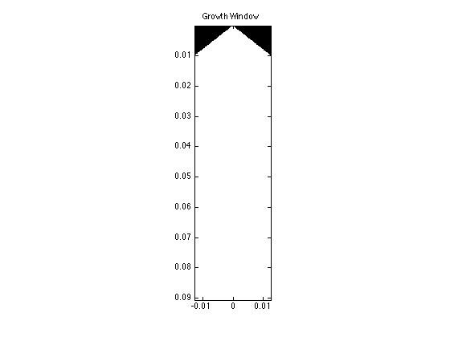
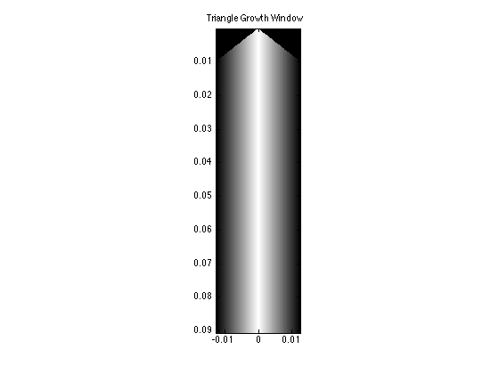
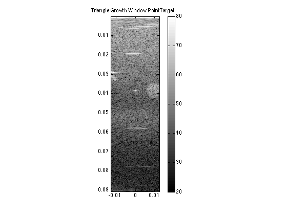
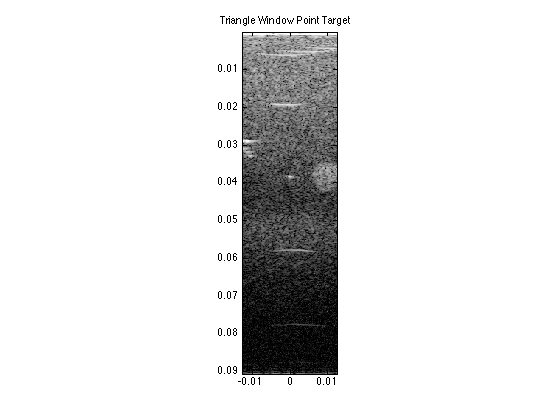

f_num=2;
binary_mask=zeros(2353,128);
for ff=1:2353
focal_length(ff)=(ff/(2*(pointTarget.samplingRateMHz*(10^6))))*1540;
pupil_diam(ff)=focal_length(ff)/f_num;
x_cols(ff)=round((pupil_diam(ff)/1540)*(2*(pointTarget.samplingRateMHz*(10^6))));
left_cols(ff)=64-(1/2)*x_cols(ff);
right_cols(ff)=64+(1/2)*x_cols(ff);
for gg=1:128
if left_cols(ff) <=gg & gg<=right_cols(ff)
binary_mask(ff,gg)=1;
end
end
end
bin_mask_mat=repmat(binary_mask, [1,1,128]);
figure; imagesc(lat_array,axial_array,bin_mask_mat(:,:,65))
title('Growth Window')
colormap('gray')
axis image
tri_wind_binary=apod_mat_tri.*bin_mask_mat;
figure; imagesc(lat_array,axial_array,tri_wind_binary(:,:,65))
title('Triangle Growth Window')
colormap('gray')
axis image
pointTarget_data=pointTarget.data(80:end,:,:);
triang_growth_pT=pointTarget_data.*tri_wind_binary;
for jj=1:128
for kk=1:2353
sum_tri_growth(kk,jj)=sum(triang_growth_pT(kk,:,jj));
end
end
figure; imagesc(lat_array,axial_array,20*log10(abs(hilbert(sum_tri_growth))),[20,80])
title('Triangle Growth Window PointTarget')
colormap('gray')
axis image
colorbar
pointTarget_data=pointTarget.data(80:end,:,:);
time=[0:1:size(pointTarget_data,1)-1]*(1/((pointTarget.samplingRateMHz)*(10^6)));
timeArray=[0:1/(pointTarget.samplingRateMHz*(10^6)):(size(pointTarget_data,1)-1)/(pointTarget.samplingRateMHz*(10^6))]';
timeArray2=repmat(timeArray,[1,128]);
for zz=1:length(pointTarget_data)
zf(zz,1)=(time(zz)*1540)/2;
end
for yy=1:length(zf)
for bb=-63.5:1:63.5
xe_cont(yy,bb+64.5)=((pointTarget.elementSpacingMM)/1000)*bb;
diag_dist_cont(yy,bb+64.5)=sqrt(zf(yy)^2 + (xe_cont(yy,bb+64.5))^2);
time_diag_cont(yy,bb+64.5)=diag_dist_cont(yy,bb+64.5)/1540;
end
for bb=-63.5:1:63.5
time_delay_cont(yy,bb+64.5)=time_diag_cont(yy,bb+64.5)-time_diag_cont(yy,65);
end
end
for dd=1:length(timeArray)
time_withDelays_cont(dd,:)=timeArray2(dd,:)+time_delay_cont(dd,:);
end
for hh=1:128
temp_cont=interp1(timeArray2(:,hh),squeeze(pointTarget_data(:,hh,:)),time_withDelays_cont(:,hh),'linear',0);
reshaped_interp_cont(:,hh,:)=reshape(temp_cont,[2353,1,128]);
end
for jj=1:128
for kk=1:2353
zone_interp_cont(kk,jj)=sum(reshaped_interp_cont(kk,:,jj));
end
end
lat_array=xe_cont(1,:);
for vv=1:2353
axial_array(vv)=(vv/(2*(pointTarget.samplingRateMHz*(10^6))))*1540;
end
tri_window=reshape(triang(128),[1,128]);
apod_mat_tri=repmat(tri_window, [2353,1,128]) ;
apodization_tri=pointTarget_data.*apod_mat_tri;
for jj=1:128
for kk=1:2353
sum_apod_tri(kk,jj)=sum(apodization_tri(kk,:,jj));
end
end
figure; imagesc(lat_array,axial_array,20*log10(abs(hilbert(sum_apod_tri))),[30,80])
title('Triangle Window Point Target')
colormap('gray')
axis image
   